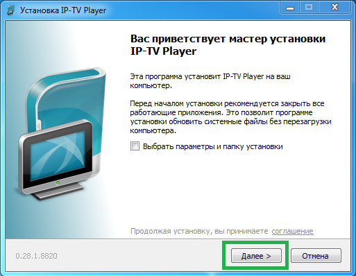
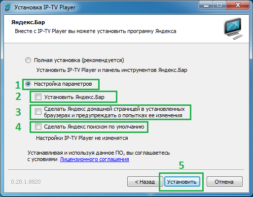
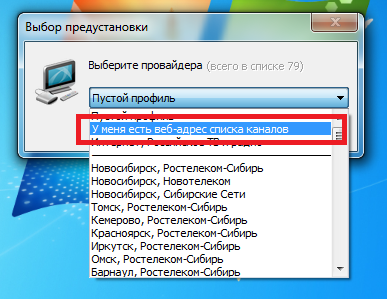
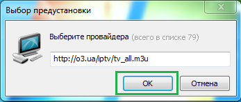
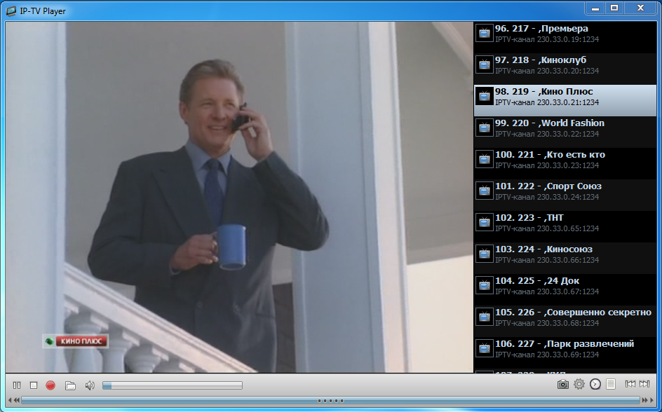

|
|||||||
| Бесплатная помощь | |||||||
| Специально для абонентов "Фринет" от технической поддержки |
|||||||
| Настройка IPTV | |||||||
| Внимание! Если у вас уже есть установленный ip-tv плеер - удалите его! В Windows 7: Пуск - панель управления - программы и компоненты В Windows XP: Пуск - панель управления - установка и удаление программ |
|||||||
| 1 | Скачайте IPTV плеер | ||||||
2 |
Запустите его. |
||||||
| 3 |  | ||||||
| 4 |  | ||||||
5 Запустите IP-TV Player с рабочего стола. |
 | ||||||
6 В текстовое поле введите адрес: Только для абонентов Киева: http://o3.ua/iptv/tv_all_actual.m3u Для всех городов: http://o3.ua/iptv/tv_only_actual.m3u |
 | ||||||
7 Всё готово! |
 | ||||||
|
Устранение неполадок | ||||||
| Если вы выполнили всё по инструкции, но при выборе канала у вас ничего не происходит - вероятно у вас его блокирует какое-то програмное обеспечение. |
|||||||
| Решение 1 | Попробуйте отключить брандмауэр Windows по следущей инструкции. Выберите вашу версию Windows: |
||||||
|
|||||||
| Если отключение брандмауэра решило вашу неисправность - просто оставьте его отключённым. Вам не о чем волноваться, если в вашей системе стоит антивирус. |
|||||||
| Решение 2 | Попробуйте отключить файрволл в антивирусе по следующей инструкции. Для этого выберите название вашего антивируса: |
||||||
|
|||||||
Примечание: в антивирусе NOD32 v3, KAV, AVG free, Avira free файрволла нет. Если отключение файрвола в антивирусе решило вашу неисправность - у вас есть два варианта: |
|||||||
| Решение 3 | Если у вас кабель интернета, заведённый в квартиру, Если у вас в квартире размещён роутер, устройство, что Проверить это вы можете выбрав марку вашего роутера: |
||||||
|
|||||||
| Если все 3 решения вам не помогли - обращайтесь в техническую поддержку. | |||||||
C наилучшими пожеланиями! - X-active |
|||||||